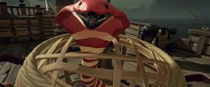
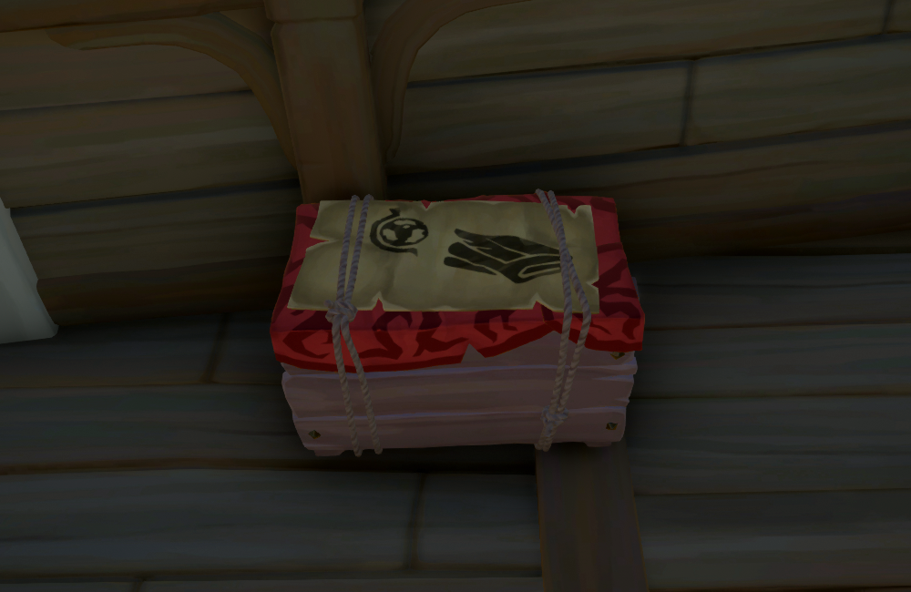
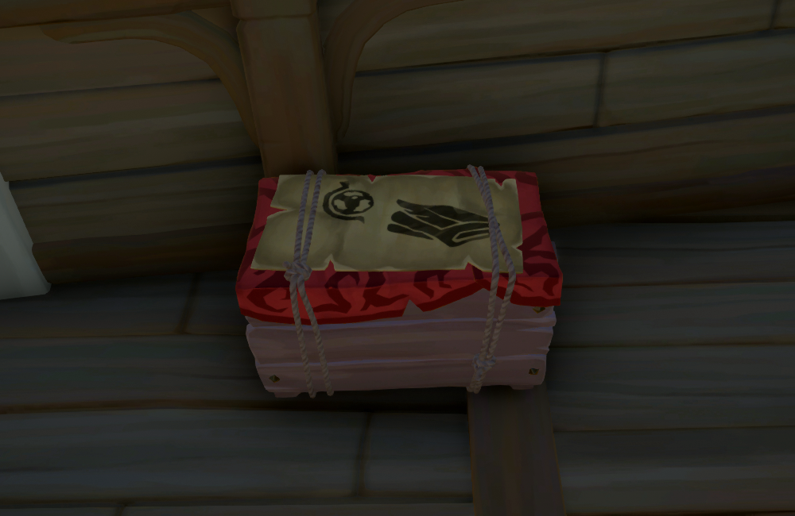

This website will help you a lot and will give you a head start and will make you a better player faster
Hi, I'm a gamer and I like playing sea of thieves and it is one of my favourite games in this website I will show you the basics of Sea of Thieves.
This is the Kraken in sea of thieves, you will know when you are getting attacked when the water turns black and your ship slows down and almost stops.
This is the Kraken in Sea of Thieves. It is actually pretty easy to defeat the Kraken it uses about 40 cannonballs but you do not need to kill all of the Kraken's arms to defeat it once you defeat it for your first time you will get an achievement called Kraken good job which will be a rare achievement you will also get a commendation called Kraken hunter and if you swim out you can take the Kraken's loot. Be mindful that you can't find the Kraken but the Kraken finds you but do not worry because there is only one Kraken per server.
This is a ghost ship in Sea of Thieves it is pretty hard to defeat if you dont have a good crew if it spawns the best thing to do is to run away. But if you sink it you can get some pretty good loot. You might of also noticed a giant cloud in the sky that resembles the shape of a ship. I highly recommend you stock the ship because this is the ghost fleet. Each wave has between 2-3 ships of any kind (Sloop, Brigentine, Galleon) there are 3 waves on the last wave the captain ship will spawn.

from left to right:
- normal skeleton "low health"
- gold skeleton high health (can be rusted) can only be harmed with a gun
- shadow skeleton becomes invincible at night unless a lantern is shined on them (low health)
- captain skeleton when killed drops items (very high health)
- head band skeleton (more powerful than a normal skeleton)
- plant skeleton invincible in water (plant keeps it alive)
- banana (regains health);
- compass (tells which way you are going useful for finding a place to dig up chests);
- bucket (useful to scoop out water of the ship);
- lantern (useful for use in the dark);
- shovel (useful for digging up chests);
- spyglass (useful for seening long ranges);
- plank (useful for repairing you ship);
- cannonball (usful for shooting at other ships out of a cannon);
- loudspeaker (useful for tolking at long range (only works in game chat);
- pocket watch (useful for telling the time and date and even more useful for merchant voeges);
- hurdy-gurdy (useful for playing music);
- concerntia (useful for playing music);
- drum (useful for playing music);
- and all items are customisable
This is the megalodon in sea of thieves it can only be found in deep water you can tell is you are about to get attacked by a megalodon if you hear a deep rumble in the water.
In Sea of Thieves there are three sections of the map 1. the shores of plenty. this place has many tropical islands and in my opinion is the nicest place on the map. 2.the wilds. this area is filled with mountainous islands. 3. the devil's roar. this is the hardest area in the game and is filled with volcanic islands the rocks from the volcanos can reach very far ranges and if they hit your ship it do devastating damage.

Here I have all the chests in the game going up in rarity there is an ashen version of these chests which is for most chests worth twice as much as the normal versions of the chest.

Going from left to right I will tell you how much the chests cost. Castaways chest is worth between 20 to 150 gold (ashen version 100 to 300 gold). seafarers chest between 120 to 300 gold (ashen version 200 to 500 gold) .Captains chest is one of the rarer chests in the game and is worth between 400 to 1200 gold (ashen version 800 to 2000 gold). Chest of thousand grogs is worth between 400 to 1500 gold (no ashen version). Chest of Sorrow is a very rare chest and sells between 300 and 3000 gold (no ashen version). Stronghold chest sells between 3000 and 5000 gold (no ashen version is availibe and can only be found at skull forts). Chest of Legends is an extremely rare chest and can only be gotten from the Athenas fortune voyages (to do Athenas fortune you need to get level 50 in gold hoarders, order of the souls and merchant alliance.) worth 6000 gold (ashen version 10000 gold). The box of wounderous secrets is the rarest chest in the game and only an ashen version can be found this chest can only be found in the devils roar and only has a 17% chance of spawning but when you find it you can sell it in Marrow Peak Outpost or Liars Backbone when you do sell this chest you can get an insane 25000 gold.
There are also countless small objects that you can find on the sea bed they are not worth much and they are relitivly rare but if you find them you can sell them to any gold hoarder. These artifacts are rarely worth more then 1000 gold.

From left to right. Slivered cup, roaring goblet, peculiar Relic, Ornate Carafede, Opulent Cafade, decorative coffer, ancient goblet.
Sea of Thieves isn't just about digging up chests or sailing the high seas it is also about fighting I would say thet about 40% of the time you will spend fighting wheater it is other players dangerous sea creatures or skeletons. I will be talking now about skeletons and what skulls they drop. Most skeleton bosses drop their skull when they are defeated, you can't tell what type of skull it is but I will tell you the different types.

Going from left to right. foul bounty skull 80 to 110 gold (ashen version 110 to 150 gold). Disgraced bounty skull 130 to 180 gold (ashen version 200 to 300 gold). Hateful bounty skull 300 to 500 gold (ashen version 600 to 900 gold). Villianous bounty skull 800 gold approx (ashen version 2500 gold approx). Skeleton Captain's skull 900 gold (no ashen version). Stronghold skull 3000 to 5500 gold (no ashen version can be found in skull forts sometimes inside a megaladon's loot rarely).
If you dont want to dig up chests or fight you can do a trading mission. From Merchant Alliance you can get gunpowder berrels and different types of crates you can only open 3 types of crates these are banana crates cannonball crates and wood crates. There are also crates that you can put stuff in but you can't get it out eg chicken coop, snake basket and pig crate.

These are the two types of gunpowder barrels in the game the red normal barrels can be found on virtrually all islands they can be exploded and they can produce a fairly large explosion but they can also be sold to the merhant for 80 to 250 gold. This next gunpowder barrel can only be found in skull forts and they are called stronghold gunpowder barrels there is one in each fort inside the stronghold they are highly explosive and produce a massive destructive barrier when they explode, they can be sold to the merchant for 2000 to 6000 gold.
These are animal crates you cannot sell them without an animal inside but the price is about the same for all animals and it is between 40 to 200 gold
 
 
from left to right. These are all the crates in the game they can be sold to any merchant the first thing is a banana crate which is worth about 270 gold and they can only be sold when the crate is full it can hold 50 bananas . This next crate is a crate is a crate of cannonballs which is worth about 1000 gold and it can hold 50 cannonballs. This next crate is a crate of ancient bone dust which is worth from 2545 to 5550 gold (getting it wet decrases the value).This next crate is a crate of exotic silks it is worth between 500 to 1050 gold (getting it wet decreases the value).This next crate is a crate of exeqisite spices which is worth between 1055 to 1900 gold (getting it wet decreases the value).This next crate is a crate of extrodanary mierals and it has a value of 1335 to 1850 gold.The next crate is called a crate of fine ore and it is worth fron 400 to 1000 gold.The next crate is called a crate of fine sugar and can be worth between 100 to 500 gold (getting it wet decreases the value).The next crate is a crate of precios gemstones and it is worth 3536 gold.The next crate is crate of rare tea and it is worth between 190 to 465 gold (getting wet decreases value).This next crate is a crate of volcanic stone and it is worth 295 gold.The last crate is a wood crate and it can hold 50 planks and is worth about 1000 gold.
In Sea of Thieves you may find underwater statues and when you go up to them you take damage these are called mermaid statues there are 3 types the blue one is the sapphire mermaid and it only require one person to break when you break it a gem will float up and it can be sold to any person in Sea of thieves.The next one is the mermaid emarald gem (green) and it requires 2 people to break and sells for 1500 gold the last mermaid statue is the ruby mermaid statue (red) is the ruby mermaid statue and it requires 3 people to break and it sells for 2000 gold.


In sea of thieves you can get 4 trusty weapons but you can only equip two one primary one secondary there is the cutlass also known as the sword the pistol and the blunderbuss also known as the shotgun and an eye of reach also known as the sniper.


In Sea of Thieves you will definately have to use your tools these are:
if you want to learn more about Sea of Thieves or buy it go the to link below.
Sea of Thieves
Made by Daniel Griggs